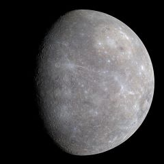

Mercury
Mercury is the closest planet to the Sun and is also the smallest of the eight planets in our solar system. For every 2 orbits of the Sun, which takes around 88 Earth days, Mercury completes three rotations of its axis. It is gravitationally locked and this rotation is unique to the solar system.
- Mercury has been known to humanity since ancient times and although its discovery date is unknown, the first mentions of the planet are believed to be around 3000 BC by the Sumerians.
- A year in Mercury is 88 days, yet a Mercury day is 176 Earth days. Mercury is nearly tidally locked to the Sun – also known as a gravitational lock – and over time this has slowed the rotation of the planet to almost match its orbit around the Sun.
- Mercury orbits so quickly around the Sun that early civilizations believed it was actually two different stars – one which appeared in the morning and another which appeared in the evening.
- Mercury is the smallest planet in the solar system with a diameter of 4,879 km and is one of five planets that is visible to the naked eye.
- After the Earth, Mercury is the second densest planet. Despite its small size, Mercury is very dense because it is composed mainly of heavy metals and rock – the main characteristic of terrestrial planets.
- Mercury is named after the messenger of the Roman gods, who is also known as Hermes in Greek mythology. This is because of the speed in which Mercury orbits the Sun and the speed with which Mercury the Roman deity was able to deliver messages.
- Astronomers didn’t realize that Mercury was a planet until 1543 when Copernicus published his Sun-centered model of the Solar System – putting the Sun as the centre of the solar system rather than the previously believed centre, the Earth.
- The planet has just 38% of the gravity on Earth. This means that Mercury isn’t able to hold the atmosphere it has and it instead gets blown away by solar winds. However those same solar winds are also bringing in new gases, radioactive decay and dust from micrometeorites – replenishing the atmosphere.
Source: https://theplanets.org/mercury/